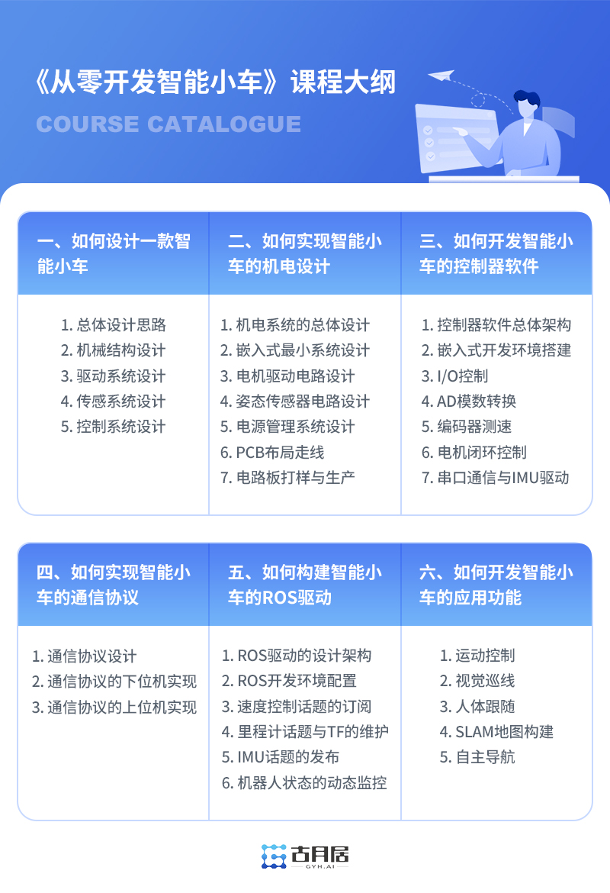

OriginBot使用指引
让我们一起踏上智能机器人开发之旅吧！
Info
在以下操作过程中，需要大家具备一些机器人开发的基础知识，建议通过以下几个问题做下自我测试：
- Linux是什么？Ubuntu是什么？如何启动命令行终端？cd、ls、sudo命令分别是什么意思？
- ssh是什么？windows和ubuntu里常用的ssh软件有哪些？又如何使用？
- ROS/ROS2是什么？有哪些核心概念？如何安装与使用？如何编译工作空间并设置环境变量？
如果以上问题大家都能够回答上来，请继续后续内容的操作；反之，建议大家先不要着急把机器人跑起来，用3~5天时间把以上问题搞清楚（使用搜索工具、查看参考资料或者古月居AI小助手可以找到答案），可以让我们更好上手后续机器人的开发。
1. 选择合适的套件
OriginBot提供Lite版、标准版和Pro版三种选择。
其中Lite版、标准版两个版本均采用RDK X3（旭日X3派）作为核心处理器，提供5Tops算力，Pro版则采用RDK X5作为核心处理器，提供10Tops澎湃算力。
标准版在Lite版的基础上，额外配置了激光雷达和个性化配件，可进一步开发机器人SLAM地图构建和自主导航应用，全方位满足智能机器人的开发需求。
Pro版在标准版的基础上使用了RDK X5，搭配更强CPU和更高算力，让智能机器人更加智能。
| 版本 | Pro版 | 标准版 | Lite版 |
|---|---|---|---|
| 效果图 |  |
 |
|
| 主要配置 | 附带编码器、相机、IMU、激光雷达、 | 附带编码器、相机、IMU、 激光雷达 | 附带编码器、相机、IMU |
关于OriginBot套件详细的物料清单请见：OriginBot套件清单
2. 组装OriginBot
参考套件组装或套件中附带的说明书，完成OriginBot的组装。
Hint
机器人组装预计需要30到60分钟，这个过程不仅可以帮助我们认识机器人组成，更可以把手上的OriginBot变得独一无二。
3. 烧写镜像和固件
套件组装完成之后，OriginBot的“身体”就有了，接下来我们给它注入“灵魂”。
（1）参考“系统安装与备份”步骤中的烧写OriginBot SD卡镜像，完成RDK X3（旭日X3派）/RDK X5镜像的烧写；
（2）【已烧录】参考“控制器固件安装”步骤中的烧写控制器固件，完成控制器固件的烧写；
Attention
OriginBot出厂未烧写SD卡镜像，请务必参考以上说明完成烧写，否则会影响后续功能的运行。
4. 电脑端环境配置
为方便监控机器人，我们在电脑端进行远程操控，需要进行如下配置：
（1）参考Ubuntu系统安装，在本地电脑上安装好系统环境，推荐安装Ubuntu20.04或Ubuntu22.04；
（2）参考ROS2系统安装，在上一步安装好的Ubuntu系统上，安装ROS2，推荐安装ROS2 Foxy或ROS2 Humble。
（3）参考下载/编译PC端功能包，在电脑端完成OriginBot相关功能包的编译，主要用于未来的上位机可视化显示与仿真。
5. 运行快速上手示例
现在大家摩拳擦掌，可以准备让OriginBot动起来了。
参考快速上手完成OriginBot的第一次操作，遥控机器人在地面上运动吧。
6. 运行机器人功能
OriginBot附带了众多示例程序，便于每一位开发者可以充分了解智能机器人的开发方法，大家可以在以下章节找到详细的操作方法：
Tip
OriginBot开发和运行的基础环境均为ROS2，建议大家提前学习ROS2相关的基础知识，可参考教学课程。
基础使用
介绍OriginBot基础功能的使用方法：
| 功能 | 描述 | 难度 |
|---|---|---|
| 搭建开发环境 | vscode远程调试环境搭建方法 | 初阶 |
| 代码开发方法 | 功能包的修改、编译方法 | 初阶 |
| 机器人启动与参数配置 | OriginBot底盘与传感器的启动方法 | 初阶 |
| 机器人遥控与可视化 | 键盘/摇杆控制机器人前后左右运动 | 初阶 |
| 相机驱动与可视化 | 相机图像数据的可视化显示 | 初阶 |
| 雷达驱动与可视化 | 雷达激光数据的可视化显示 | 初阶 |
| IMU驱动与可视化 | IMU数据的可视化显示 | 初阶 |
| 机器人参数动态监控 | 上位机查看机器人电压、外设、温度等状态，下发电机PID参数 | 初阶 |
| 机器人里程计校准 | 校准机器人的线速度与角速度 | 中阶 |
| 机器人充电方法 | 如何给机器人充电 | 初阶 |
| 通信协议说明 | 控制器与RDK X3（旭日X3派）之间通信协议的说明 | 中阶 |
| 上位机控制说明 | 上位机与RDK X3（旭日X3派）之间相互通信的说明 | 高阶 |
| 实时操作系统RTOS配置 | 控制器配置FreeRTOS | 高阶 |
| EKF多传感器融合 | EKF多传感器定位 | 初阶 |
应用功能
介绍OriginBot应用功能的操作方法：
| 功能 | 描述 | 难度 |
|---|---|---|
| 基础功能编程 | 机器人基础功能编程示例（获取机器人状态，控制机器人外设） | 中阶 |
| SLAM地图构建 | cartographer地图构建 | 初阶 |
| 自主导航 | navigation2+amcl实现机器人自主定位与导航 | 初阶 |
| 人体跟随 | 机器人动态识别人体并跟随运动 | 初阶 |
| 手势控制 | 机器人动态识别手势并作出对应的动作 | 初阶 |
| 视觉巡线（OpenCV） | opencv实现视觉巡线运动 | 中阶 |
| 视觉巡线（AI深度学习） | 基于深度学习流程，实现视觉巡线功能 | 高阶 |
| Gazebo虚拟仿真 | 在PC端运行OriginBot三维物理仿真环境 | 中阶 |
| SLAM地图构建(Gazebo) | 在PC端运行OriginBot三维物理仿真环境建图 | 中阶 |
| 自主导航(Gazebo) | 在PC端运行OriginBot三维物理仿真环境自主导航 | 中阶 |
| 车位寻找(AI深度学习) | 机器人动态识别车位并行驶至车位中 | 初阶 |
| 轨迹跟踪 | 机器人沿着指定轨迹行走 | 初阶 |
| 踢球射门 | 机器人动态识别足球，并将足球射入球门 | 高阶 |
| 语音控制 | 机器人动态识别语音信息，并作出不同反应 | 高阶 |
应用功能演示
7. 学习配套课程
《从零开发智能小车》系列课程可以帮助大家了解OriginBot的详细设计与开发过程，使用套件中附带的专属课程兑换卡即可兑换学习，其他用户也可单独购买后学习。

探索更多可能
OriginBot是一个社区共建的开源项目，大家可以二次开发，让手上的OriginBot更加与众不同，欢迎每一位开发者参考、学习、反馈、贡献。
如果大家基于OriginBot开源项目玩出更多花样，欢迎在这里分享！
祝愿大家都有一段美妙的机器人开发之旅☻